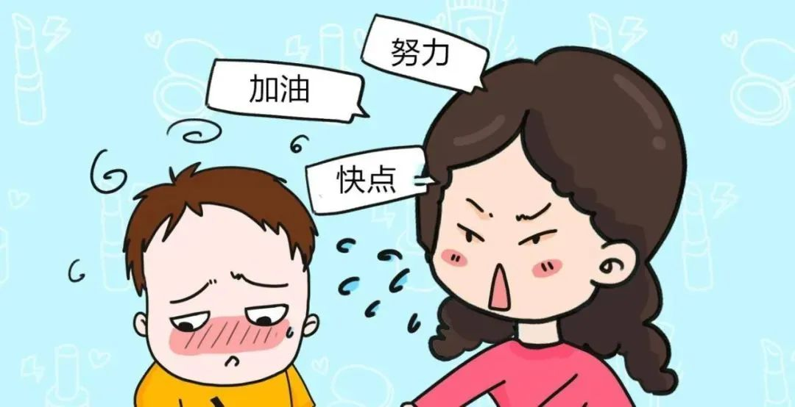
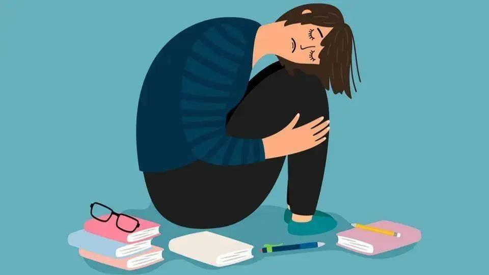
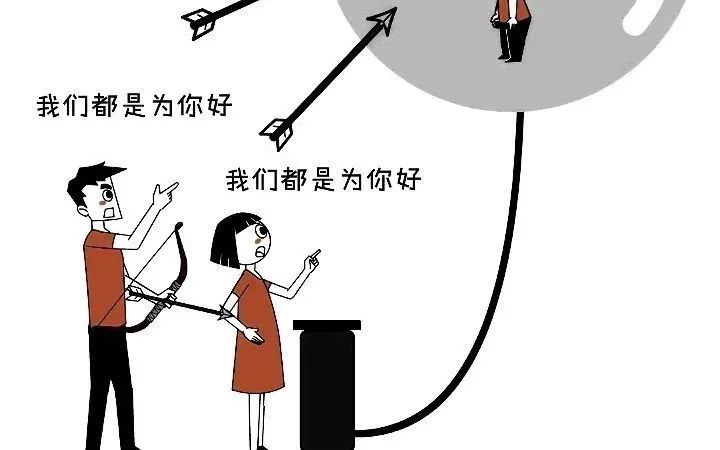

“我爸妈在外都说什么都是为了我，觉得连活着都是为了孩子。”
“事实上现在的小孩并不脆弱，甚至抗压能力、情感表达能力、信息接收和处理能力都比上一代人要好很多。”
“我们做这些都是为了你好。”
“事实上现在的小孩并不脆弱，甚至抗压能力、情感表达能力、信息接收和处理能力都比上一代人要好很多。”
“我们做这些都是为了你好。”
“在中国，很多的父母是看不得孩子快乐的，就是，孩子是一个受苦的状态，他才觉得这个是一个正能量。如果人一休息啊，一快乐啊，一玩儿啊，一花钱买了好吃的，对自己好一点啊，（家长）就认为这个是一种自私和堕落的表现。”
这种心态普遍出现在中国家庭的父母中，而这种心态其实有一个专有名词叫做“超我焦虑”，看不得别人快乐，不是看不到，就是一看到孩子快乐，心里就堵的慌，就是要孩子整天苦哈哈的，这个时候父母就会觉得，这才是正能量的。
一位父亲就是这样给自己的孩子回复的：“问问你自己吧！不考虑上辈子人的辛苦，只想自己过得舒服。”却不知道孩子看到这些话，内心有多么窒息。
而这些类似的话，实际上则弥漫在生活的角角落落里，一点一点地浸染了孩子原本快乐而纯真的心灵，给孩子套上了本不属于他们的枷锁和压力。
“我爸连活着都觉得是为了孩子。”
“我爸妈在外都说什么都是为了我。”
“上了一堆补习班，我妈让我再去考一堆证书和比赛，我说太累了，不想考了，我妈说我是个不上进的人。”
“我们以前小时候读书有多苦，劈柴挑水，做农活还要写功课，你们现在环境好了，叫你读点书，这点苦都受不了。”
当孩子学习累想去玩儿的时候，母亲却发来了一条咄咄逼人的语音：“你见我出去玩过吗？我觉得我都没有玩儿的资格，你知不知道，我连玩儿的资格都没有，你书读完了吗，你就跑那儿去玩，不得了了你，你上天了你。”
|  |
而孩子的心声吐露也让人觉得很窒息，“从小都是打压，看电视只要一笑就会用嘲讽的语气说我，在家都不敢笑。”
当有的孩子把这些话发给父母时，父亲是这样回答的：“不要自认为小聪明，希望你好自为之自己的路自己走，到最后别人也不会抬着你走。”母亲则回复了更多：“我们真不是看不得你们快乐，是因为你们还没到躺平的时候，想让你们变优秀点。如果以后你们有本事自己过的好了，等自己找到工作了，自己经济独立了，看我们还会不会管你们，绝对不会了。我们特别希望你们快乐，只是你们还没有资格躺平，懂不？你们想想，你们有本事养活自己吗？你们想想，世界上还有谁比我们更希望你们幸福？不要一天天一肚子怨言，以后你们就会理解父母的苦心了。”
虽然父母的担心和良苦用心的出发点是好的，但是却回避了因此给孩子带来的心理负担，居安思危的观念是可以有的，但不用每天都忧心忡忡，把自己的生活过的没有了滋味，还要让孩子苦哈哈的才认为是正常的。
有人这样对孩子说：“真正的爱自己呢，就是你可以成为一个自私的、贪婪的、懒惰的自己，你也可以成为一个自律的、精进的、有使命的自己，有道德、有慈悲的自己，这两个自己其实都在，是一个与生俱来的共存关系，这就是真正的爱自己。”孩子不是生来要受到父母打压，生来要受苦的，孩子也可以选择自己活着的态度和方式。
一位网友回答，事实上现在的小孩并不脆弱，甚至抗压能力、情感表达能力、信息接收和处理能力都比上一代人要好很多。
那为什么会出现这种情况呢？
这是一名上海14岁女生跳楼前写下的遗书，看完之后或许我们心中会有答案。
跳楼前她留下压岁钱，将微信的零钱转给父母，踩着榻榻米跳楼，目的是为了不让自己的家变成凶宅，还写了纸条，“榻榻米我用鞋踩过，用抹布擦干净”，下面是孩子的遗书全文：
人生一趟，遇见你们很荣幸。若有来生，我们不要再见面了。想想也没什么，你们爱的不是我，而是冲进班级前十的我，是排名年龄前20的我，是考到满分的我，你们心目中的完美女儿太优秀，我达不到。开学就是初二了，你们口中美好的小学，轻松的预备，快乐的初一，我都是玩命扛下来的，哪里还奢望着什么魔鬼初二初三，也没什么好可惜好难过的，是你们说不指望我的，我相信你们，我是带给你们荣誉的人，严格出孝子的代言人，在朋友面前攀比的工具，在人前彬彬有礼，来了电话时语气礼貌又文明，在人后我承受了你们最肮脏的辱骂，气撒出来了，你们开心了，我就当睁一只眼闭一只眼，反正也没什么不是吗？人生比的不是长短，是价值，我知道许多你们不知道的事，为世界也做出过微薄的贡献，巴掌打在脸上更疼，然后是手指，再是手臂，最后是大腿，打在背上还行，被皮带或者是电线抽实，腿上最疼，然后是背上，最后是双臂，羞辱人最有效的方法，是让她穿上拖鞋站在屋外向外人示众，再是没日没夜不停的尖叫声，骂最难听的话，还说的冠冕堂皇，最后是泼妇。失眠的原因是睡前被骂或者被打，躺在床上接着听从主卧传来的辱骂声，剩下的时间用来回味一天的难过，中国人爱说，小孩疯掉是因为学习压力大，可明明是家长把成绩看得太重，现在明白了，因为她们不知道自己错了，过去不知道，现在不知道，未来更不可能知道，孩子喜欢的玩耍方式一直在变，我们满意的作业量一直在变，流传下来的，却是上一辈的那句，“我们在你们这个岁数是怎么怎么样的”，但凡你真的认识到自己的差，都没脸说出这种话，但凡你在正方面有一点基因，我们都不会这样。这年头就是这么怪，坐在沙发上，躺在床上的人，永远有资格指着鼻子骂一个正在读书或写功课的人，不因为别的，就因为别人是长辈。是我太懦弱了，不敢面对一次语文60分，数学70多分和英语80几分，我还是活成了自己讨厌的样子，这辈子做尽了别人的出气筒，但凡是有些对不起人的，自然不是你们。为了她们，我又意外地挺过了初一，的确是意料之外，既然都受不了彼此，不如我们各退一步，我消失也不错啊。我不怕，我不气你们，爱护你们的肺和心脏，不缩短你们的寿命了，你们不适合养女儿，或许儿子承受能力更好，也不能完全怪我，我真的尽力了，实在受不了了，这蛮好，不用担心我抄人作业，我作业不用交了，也不用担心我某某时间背着你们玩电子产品，花钱买我喜欢的东西，为人大气，我给你们你们想要的东西，桌子上是我拿的出手所有的现金，你说压岁钱统一给我，3万我不要了，全归你，不知道她们会不会给保险金，有的话最好，手机也不需要了，少了一个败家子，家庭会富裕起来，微信的钱全给你们了，自己看着分，我课要上完了，那羽毛球课交你们别买你们偏不听，那个课好像成年人也能上，你们赶着暑假去听掉，平时没有打球挺好，我不会赖在家里把房子变成凶宅的放心，把奶奶接过来一起住吧，别整天去那种地方旅游被人家骗钱，诚心诚意祝你手术顺利，早日康复，少加班少熬夜，别过来烦我。桌上那蓝色的卡是我们学校的借书卡，我借了学校三本书《创业史》《红颜》《哈利波特与死亡圣器》，一定要帮我还掉，麻烦跟老师说声谢谢。记得用我的零钱给小朋友买棒棒糖，珍珠棒的牌子好，房间里的东西她们有喜欢的随便拿，毁掉一个人很简单，只需要毁了她的童年，其余的一切顺其自然，你们已经毁了我，也毁了江雯月，请好好待她的弟弟吧，请收手这种伤害，这并不卫风，你们把我们想得太坚强了，反省这件事就留给岁月好了。
这一千多字的遗书，没有分段，显然是不符合一个初中学生的学习能力的，但是全文字里行间却能让我们感受到她平静又绝望的内心，可谓是字字泣血，句句扎心。
她全篇没有指责父母的言论，却只有失望，虽然心灰意冷，却还在处处为被人着想，但正是这样一个善良的好女孩，最终却在这种充满压力的教育环境和家庭环境中结束了自己的生命。在中国的教育例，父母总觉得自己做的每一件事都是为了孩子好，都是爱孩子的，而孩子应该言听计从，以读书为重，心无旁骛，却忽略了每个父母的曾经也是个贪玩的孩子，忽略了孩子内心真正需要的东西以及情绪价值。
|  |
根据2008年中国健康委的数据显示，中国有接近3千万儿童和青少年（小于17岁）有抑郁情况。2012年，中国大陆25个地区2679名青少年（10-25岁）抑郁比例为20.3%。也就是说，5个孩子中，大约有1个有抑郁倾向，从数据上看，我国青少年抑郁等心理问题已到了相当严重的地步。虽然导致孩子抑郁的原因有很多，比如性格气质、创伤性事件、学业压力等，但研究发现，如果孩子生活在一个功能健全的家庭里，发生抑郁的几率会大幅降低。但是当孩子变成父母攀比的工具和出气筒时，孩子的心理问题就容易被忽视，父母也忘却了孩子也是个人，也需要情感支持和关心，而不是将自己为人父母的思想单向映射在孩子身上。父母们总是宽以待己，严以待子，每天都被各种各样的焦虑包围着，回过头来就会把这种焦虑的情绪转嫁给孩子，从来没有问过孩子的感受。遗书里面，全篇都是用“你们”，而没有出现“爸妈”二字，实在令人心痛。
在中国的家庭中，经常能听到父母说着“都是为你好”的语句，而家长这句话语背后这份严厉又沉重的爱，带给孩子的却是令人窒息的压力和痛苦。
在我们看来，很多亲子关系中的悲剧，都是父母与孩子关系和地位的不对等造成的。大部分传统的中国家庭中，父母惯于给孩子发号施令，以一个比孩子身份、地位还高的视角，去要求和强迫孩子，而孩子只能服从。
虽然现在国家颁布了“双减政策”，但是家长们还是会要求孩子拼命学习，家长们认为学习成绩好是孩子们未来的出路，“别让孩子输在起跑线”，“望子成龙，望女成凤”，这一句句话中都蕴含着父母的期望，部分家长将孩子当成了他们完成愿望的代理人，自己做不到的事情便要求自己的孩子去完成，若孩子达不到，不仅增加了孩子的压力，也提高了自己的焦虑。还有的父母将孩子作为攀比的工具，走亲访友，闲暇聊天中总会提起“谁谁谁家的孩子怎么怎么样”，“谁谁谁家的孩子得了什么奖”，“谁家的孩子报了什么补习班”，在这种社交环境下，父母和孩子深陷在“影子教育”的定位中难以自拔，于是便在这种互相攀比之下，觉得要求孩子上各种补习班，取得各种好成绩等是为了孩子好，却忽略了对孩子好是需要考虑到他们的真实需求和需要。
在我们的访谈中，有位家长在提到关于为什么让孩子上补习班则说到，“与其让他在家里玩手机，不如给他报多点补习班上课。”而对于补习班是否有效，则给出这样的回答“我也不知道有没有效果，反正去上补习班了就行。”家长看不得孩子休息和放松的情景，便要求孩子也要一直辛苦和忙碌，却仅仅也是因为“别人家的孩子”也在上补习班。
|  |
家长们总是说，“我都是为了你好”，背后其实可能存在多种原因：其一，家长对于孩子的关心与期望，而过度的期望容易转化成为压垮孩子的重担；其二，家长认为自己肩负着的责任和压力，以这种话对自己进行宽慰，却忽略了这些话对孩子的作用适得其反；其三，家长教育的不确定性和焦虑，教育是一项充满不确定性的任务，家长在复杂多变的社会环境下容易对于自己的决策产生困惑和顾虑，而无意间便把这些不该在孩子童年时应该有的压力带给了他们。所以，希望我们的家长们多把注意点放在孩子的身上，而不是借着对孩子好的名义而施行自己的利益，还给孩子一个更轻松愉快的学习环境，走出他们心中荆棘丛生的压力。